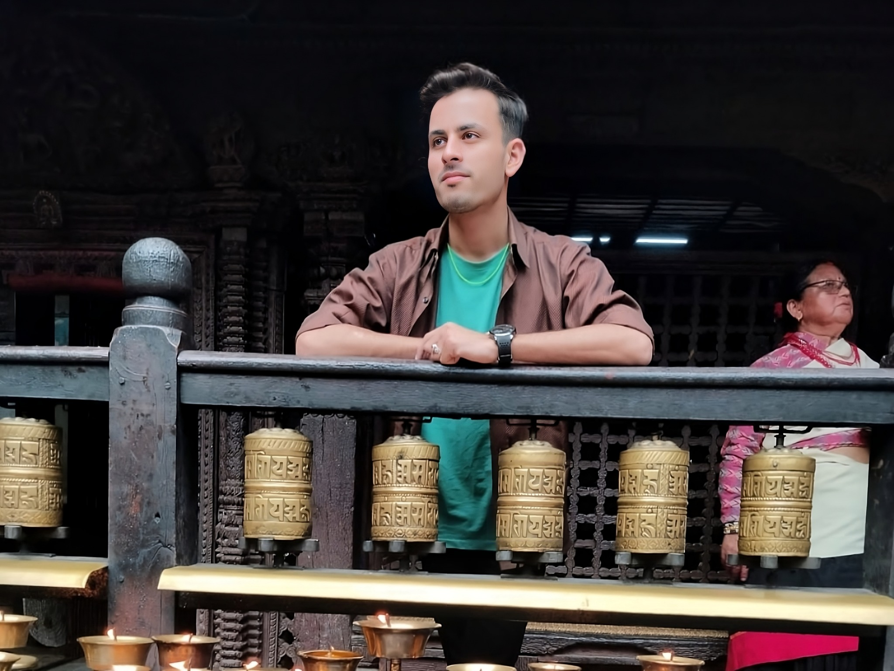
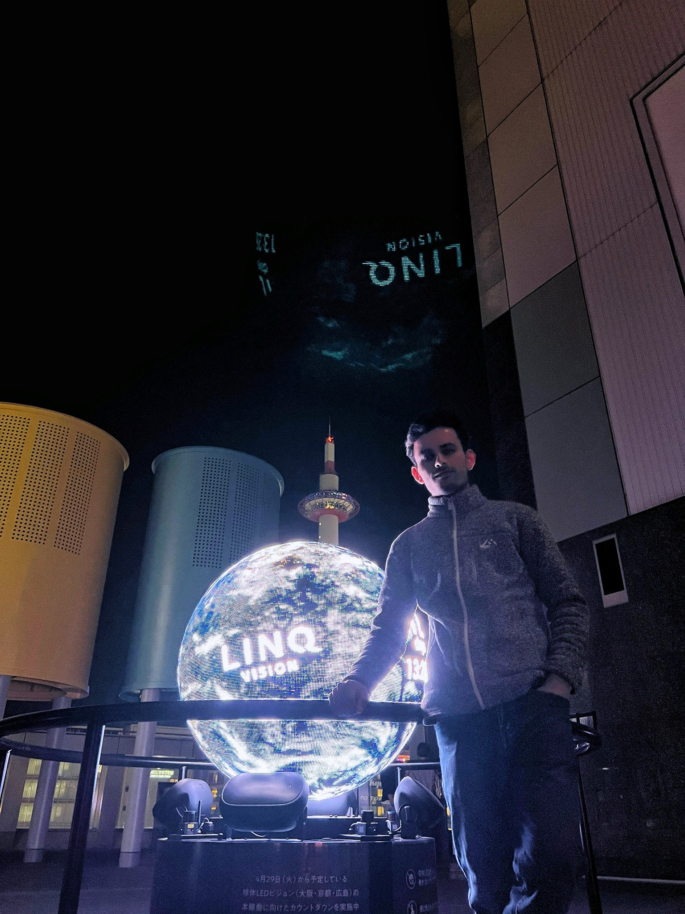

Pythonの授業・チーム制作
進行中Senpai Bot
留学生向けのチャットボット
日本に住む留学生の生活をサポートすることを目的に、 制作を始めました。私はチームリーダーを担当しています。
現在の段階
どのような質問に答えるかどのような機能を作るかチームで考えている段階です。
完成の目標
今学期が終わるまでの完成を目指しています。
担当の先生：JEZREEL LEPON ESGUERRA
IT学生のポートフォリオ
ジョシ.ケムラジ
ネパール出身。京都でITを学んでいます。
プログラマーとインフラエンジニアを目指して、
基礎から勉強を続けています。
自分から学び、責任を持って取り組みます。
授業が始まる前から、PythonとHTML・CSSの基礎を自分で勉強してきました。そのため授業の内容が理解しやすくなりました。学校の課題や制作にも取り組んでいます。
ネパールのアパレル店では店舗責任者を担当しました。現在のアルバイトではさまざまな年代の方と一緒に働き、協力することの大切さを学んでいます。学び続ける姿勢と責任感を将来の仕事にも生かしたいです。


得意な科目はPythonです。現在は、Pythonの授業でチーム制作に取り組んでいます。
Pythonの授業・チーム制作
進行中留学生向けのチャットボット
日本に住む留学生の生活をサポートすることを目的に、 制作を始めました。私はチームリーダーを担当しています。
どのような質問に答えるかどのような機能を作るかチームで考えている段階です。
今学期が終わるまでの完成を目指しています。
担当の先生：JEZREEL LEPON ESGUERRA
日本語能力試験 N3 合格
卒業
BBS 入学
BBS 中途退学
卒業
情報処理科 国際ビジネスITコース 入学
情報処理科 国際ビジネスITコース 卒業予定
—
アパレル販売・店舗責任者
在庫の確認や売上の報告、スタッフ5名のシフト作成を担当しました。。一つひとつの仕事に責任を持って取り組みました。
—
友人とのオンライン事業
自分で選んだ商品を海外のお客様に売ることを目標に友人と販売を始めました。実際に商品が売れ1年以上販売を続けました。
当時ネパールで使っていた支払い方法にはドルで支払える金額に上限がありました。そのため仕入れを続けることが難しくなり、販売をやめました。
この経験から知らないことを自分で調べて行動することの大切さを学びました。
現在・1年以上継続
アルバイト
品出しの仕事から始めて、現在はレジの仕事とセルフレジでお困りのお客様のサポートも担当しています。
店で留学生は私一人ですが、さまざまな年代の方と仲良くなりました。一緒に働く中で日本のお店のマナーや協力することの大切さを学んでいます。
システムの開発や機器の設定では、作業を確認しながら進めたいです。問題があれば早く報告し、分からないことは自分で調べて、必要なときは先輩に相談します。周りの人と協力しながらお客様が安心して使えるシステムを役に立ちたいです。
自分の部署でチームリーダーになることが目標です。まずは仕事に必要な知識や技術を身につけ、任された仕事に責任を持って取り組みたいです。
将来はメンバーの意見を聞きながら困っている人をサポートしながらチームをまとめたいです。チームの目標の達成と会社の成長に貢献したいと考えています。
音楽を聴くことが好きです。特に印度語の音楽が好きで、アリジット・シンの曲をよく聴いています。
ご連絡
京都府京都市・日本全国での勤務が可能です